토목기사 (2007-09-02 기출문제)
1과목: 응용역학
1. 휨모멘트를 받는 보의 탄성에너지(stain energy)를 나타내는 식으로 옳은 것은?
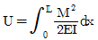
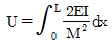
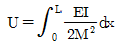
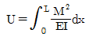
(정답률: 43%)

2. 그림과 같이 길이가 같고 EI가 일정한 단순보에서 집중하중을 받는 단순보의 중앙처짐은 등분포하중을 받는 단순보의 중앙처짐의 몇 배인가?
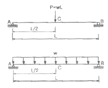
- 1.6배
- 2.1배
- 3.2배
- 4.8배
(정답률: 59%)
3. 동일한 재료 및 단면을 사용한 다음 기둥 쭝 좌굴하중이 가장 큰 기둥은?
- 양단 고정의 길이가 2L인 기둥
- 양단 힌지의 길이가 L인 기둥
- 일단 자유 타단 고정의 길이가 0.5L인 기둥
- 일단 힌지 타단 고정의 길이가 1.2L인 기둥
(정답률: 65%)
4. 단면에 전단력 V=75ton이 작용할 때 최대 전단응력은?
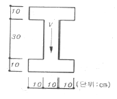
- 83kg/cm2
- 150kg/cm2
- 200kg/cm2
- 250kg/cm2
(정답률: 67%)
5. 지름 d인 원형 단면의 회전 반경은?
- d/2
- d/3
- d/4
- d/S
(정답률: 83%)
6. 그림과 같은 4각형 단면의 단주(短柱)에 있어서 핵거리(核距離) e는?
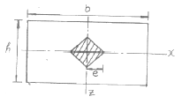
- b/3
- b/6
- h/3
- h/6
(정답률: 40%)
7. 다음 그림과 같은 3힌지 아치(Arch)에 힌지인 G점에 집중 하중이 작용하고 있다. 중심각도 45°일때 C점에서의 전단력은 얼마인가?
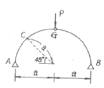
- P/2
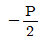
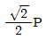
- 0
(정답률: 36%)
8. 절점 0는 이동하지 않으며, 재단 A. B. C가 고정일 때 Mco의 크기는 얼마인가? (단, K는 강비이다.)
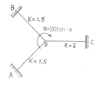
- 2.5 tonㆍm
- 3 tonㆍm
- 3.5 tonㆍm
- 4 tonㆍm
(정답률: 73%)
9. 다음 부정정보의 a 단의 작용하는 모멘트는?
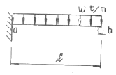
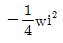
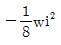
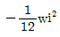
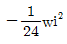
(정답률: 38%)
10. 양단 내민보에 그림과 같이 등분포하중 W=100kg/m가 작용 할 때 C점의 전단력은 얼마인가?
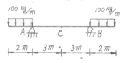
- 0kg
- 50kg
- 100kg
- 150kg
(정답률: 57%)
11. 다음 그림의 삼각형 구조가 평행상태에 있을 때 법선방향에 대한 힘의 크기 P는?
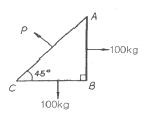
- 200.8kg
- 180.6kg
- 133.2kg
- 141.4kg
(정답률: 44%)
12. 부재 AB의 강성도(stiffness)를 바르게 나타낸 것은?
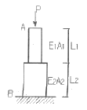
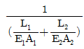
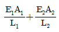
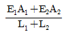
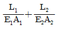
(정답률: 65%)
13. 주어진 단면의 도심을 구하면?
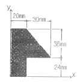
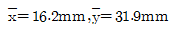
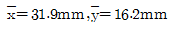
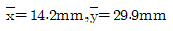
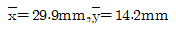
(정답률: 77%)
14. 탄성계수 E=2.1×106kg/cm2, 프와송비 v=0.25일 때 전단 탄성계수의 값은?
- 8.4×105kg/cm2
- 10.5×105kg/cm2
- 16.8×105kg/cm2
- 21.0×105kg/cm2
(정답률: 57%)
15. 평면응력을 받는 요소가 다음과 같이 응력을 받고 있다. 최대 주응력은?
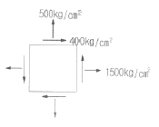
- 640kg/cm2
- 1640kg/cm2
- 360kg/cm2
- 1360kg/cm2
(정답률: 64%)
16. 그림과 같은 트러스의 C점에 300kg의 하중이 작용할 때 C점에서의 처짐을 계산하면? (단, E=2×106kg/cm2, 단면적=1cm2)
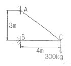
- 0.158cm
- 0.315cm
- 0.473cm
- 0.630cm
(정답률: 63%)
17. 다음과 같은 구조물에 우력이 작용할 때 모멘트도로 옳은 것은?
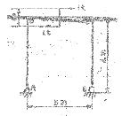
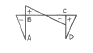
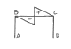
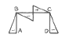
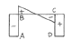
(정답률: 35%)
18. 그림과 같은 캔틸레버보에서 최대 처짐각(θB)은? (단, EI는 일정하다.)
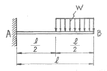
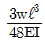
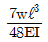
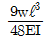
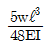
(정답률: 57%)
19. 그림과 같은 단순보에서 C점에 3tonㆍm의 모멘트가 작용할 때 A점의 반력은 얼마인가?
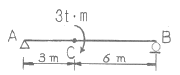
- 1/3ton(↑)
- 1/3ton(↓)
- 1/2ton(↑)
- 1/2ton(↓)
(정답률: 32%)
20. 다음과 같은 구조물에서 부재 AB가 받는 힘의 크기는?
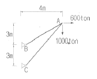
- 3166.7ton
- 3274.2ton
- 3368.5ton
- 3485.4ton
(정답률: 60%)
2과목: 측량학
21. 그림에서 ①, ②는 수준측량 노선의 일부로서 다음과 같은 성과를 얻었다. B, C간의 고저차와 B, C간의 고저차와 평균 제곱근오차는 얼마인가?
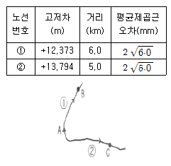
- 1.221m, ±6.6mm
- 1.221m, ±7.7mm
- 1.421m, ±6.6mm
- 1.421m, ±7.7mm
(정답률: 32%)
22. 하천의 심천측량에 관한 설명으로 틀린 것은?
- 심천측량은 하천의 수면으로부터 하저까지의 깊이를 구하는 측량으로 횡단측량과 같이 행한다.
- 로드(rod)에 의한 심천측량은 보통 수심 5~6m 정도 의 얕은 곳에 사용한다.
- 레드(lead)로 관측이 불가능한 깊은 음향측심기를 사용한다.
- 심천측량은 수위가 높은 장마철에 하는 것이 효과적이다.
(정답률: 40%)
23. 종단접법에 의한 등고선 관측방법은 어느 경우에 사용하는 것이 가장 적당한가?
- 정확한 토량을 산출할 때
- 지형이 복잡할 때
- 비교적 소축척으로 산지 등의 지형측량을 행할 때
- 정밀한 등고선을 구하려 할 때
(정답률: 27%)
24. 노선의 극선설치에 있어서 반경 R=500m, 노면마찰계수 f=0.1, 편경사 i=4%일 때 최대 주행속도 V는 얼마로 해야 하는가?
- 84km
- 94km
- 100km
- 120km
(정답률: 32%)
25. 그림과 같은 트레버스에서 AL의 방위각이 29° 29‘ 15“ BM의 방위각이 320° 27’ 12”, 내각의 종합이 1109° 47‘ 32“ 일 때 각측각 오차는?
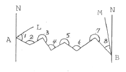
- 45“
- 35“
- 25“
- 15“
(정답률: 28%)
26. 원격팀측에 사용되는 있는 센서 중 수동적 센서가 아닌 것은?
- 전자 스캐너
- 다중파장대 사진기
- 비디콘 사진기(Vidicon camera)
- 레이다(Ladar)
(정답률: 39%)
27. 지상사진측량과 항공사진측량에 관한 설명 중 틀린 것은?
- 지상사진측량은 축척변경이 용이하나, 항공사진 측량은 축척변경이 안된다.
- 작업지역이 좁은 경우에는 지상사진측량이 작업지역이 넓은 경우에는 항공사징측량이 유리하다.
- 지상사진측량은 전반교회법으로 측량한다.
- 항공사진측량은 후방교회법으로 측량한다.
(정답률: 50%)
28. 삼각점0에서 약 100 떨어진 A, B 두 점 간의 협각을 관측하고자 한다. 0점에서 설치기계의 편심을 5mm 허용한다면 협각에 생기는 최대 각오차는 약 얼마인가?
- 10“
- 20“
- 30“
- 40“
(정답률: 24%)
29. 원곡선에서 반지름 R=200m, 시점으로부터 교점(I.P)까지의 추가거리 423.26m 교각 I=42° 20'일 때 시단현의 편각은 얼마인가? (단, 중심말뚝간격은 20m임)
- 0° 50‘ 00“
- 2° 01‘ 52“
- 2° 03‘ 11“
- 2° 51‘ 47“
(정답률: 30%)
30. 거리 100m에 대한 스타디아선의 읽기오차가 0.5cm일 때 100m 떨어짐 지점을 시거측량한 경과 고도각이 15° 였다면 시거측량에 의한 고저차의 측정오차는? (단, K=100, C=1 이다.)
- 8.7cm
- 12.5cm
- 15.3cm
- 21.5cm
(정답률: 22%)
31. 전진법으로 트래버스측량을 하여 축척 1/600에서 도상 1mm의 폐합오차가 생겼다. 측선의 거리가 다음과 같을 때 측점 No.1의 배분량은? (단, No.1-No.2:100m, No.2-No.3:50m, No.3-No.4:100m, No.4-No.5:150m, No.5-No.1:100m)
- 0.60m
- 0.48m
- 0.3m
- 0.12m
(정답률: 17%)
32. 다음 중 준거타원체를 기준으로 하는 요소로서 가장 관계가 먼 것은?
- 삼각점의 경위도좌표
- 지구의 편평률
- 천문경위도
- 측지경위도
(정답률: 40%)
33. 조정계산이 완료된 조정각 및 기선으로부터 처름 신설하는 삼각점의 위치를 구하는 계산 순서로 가장 적합한 것은?
- 편심조정계산→삼각형계산(변.방향각)→경위도계산→좌표조정계산→표고계산
- 편심조정계산→삼각형계산(변.방향각)→좌표조정계산→표고계산→경위도계산
- 삼각형계산(변.방향각)→편심조정계산→표고계산→경위도계산→좌표조정계산
- 편삼각형계산(변.방향각)→편심조정계산→표고계산→좌표조정계산→경위도계산
(정답률: 25%)
34. A와 B의 좌표가 다음과 같을 때 측선 AB의 방위각은? (단, A점의 좌표(XA=179847.1m, YA=76614.3m), B점의 좌표(XB=179964.5m, YB=76625.1m)
- 5° 23' 15"
- 185° 15' 23"
- 185° 23' 15"
- 5° 15' 22"
(정답률: 20%)
35. 지구상의 한 점에서 중력방향 90°를 이루고 있는 평면을 무엇이라 하는가?
- 수평면
- 지평면
- 수준면
- 정수면
(정답률: 37%)
36. 노선의 곡률반경이 100m, 곡선거리가 20m일 경우 클로소이드(clothoid)의 매개변수(A)는 약 얼마인가?
- 22m
- 40m
- 45m
- 60m
(정답률: 48%)
37. 1/1000 축척의 지형도상에서 토지의 도상면적을 측정하니 2250cm2였으나 지형도를 점검한 결과 가로, 세로가 각각 2%가 늘어나 있었다면 실제와 토지면적은?
- 22⑤00.0m2
- 22⑤88.0m2
- 22⑤88.2m2
- 216263.0m2
(정답률: 22%)
38. 기계적 절대표정(absolute or ientation)에서 행하여지는 작업은?
- 축척만을 맞춘다.
- 경사만을 바로잡는다.
- 축척은 경사를 바로 잡는다.
- 내부표전 및 상호표정 이전에 하는 작업이다.
(정답률: 24%)
39. 도로의 곡선부에서 획폭량(slack)을 구하는 식으로 맞는 것은? 9단, R:차선 중심선의 반지름, L:차량 앞면에서 차량의 뒤축까지의 거리)
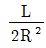
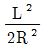
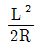
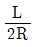
(정답률: 40%)
40. 각변의 오차가 다음과 같은 직사각형에서 면적평균 제곱 오차는?
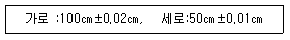
- ±0.02cm2
- ±1.41cm2
- ±1.58cm2
- ±2.06cm2
(정답률: 39%)
3과목: 수리학 및 수문학
41. 위어에 관한 설명 중 옳지 않은 것은?
- 위어를 월류하는 흐름은 일반적으로 상류에서 사류로 변한다.
- 위어를 월류하는 흐름이 사류일 경우 유량은 하류 수위의 영향을 받는다.
- 위어는 개수로의 유량측정, 취수를 위한 수위증가 등의 목적으로 설치된다.
- 작은 유량을 측정 할 경우 3각 위어가 효과적이다.
(정답률: 20%)
42. 강수량 자료를 분석하는 방법 중 이중 누가 해석(double mass analysis)에 대한 설명으로 옳은 것은?
- 평균 강수량을 계산하기 위하여 이용한다.
- 강수의 지속기간을 알기 위하여 이용한다.
- 결측자료를 보완하기 위하여 이용한다.
- 강수량 자료의 일관성을 검증하기 위하여 이용한다.
(정답률: 54%)
43. 유량 3ℓ/sec의 물의 원형관내에서 층류상태로 흐르고 있다. 이때 만족되어야 할 관경(D)의 조건으로서 옳은 것은? (단, 층류의 한계 레이놀즈수 Re=2000, 물의 등점성계수 v=1.15×10-2cm2/sec이다.)
- D≥83.3cm
- D＜80.3cm
- D≥166.1cm
- D＜160.1cm
(정답률: 34%)
44. SCS의 초과강우량 산정방법에 대한 설명 중 옳지 않은 것은?
- 유역의 토지이용형태는 유효우량의 크기에 영향을 미친다.
- 유출곡선지수(runoff curve number)는 총 우량으로 부터 유효우량의 잠재력을 표시하는 지수이다.
- 투수성 지역의 유출곡선지수는 불투수성 지역의 유출곡선지수보다 큰 값을 갖는다.
- 선행토양함수건(antesedent soil moisture condition)은 1년을 성수기와 비성수기로 나누어 각 경우에 대하여 3가지 조건으로 구분하고 있다.
(정답률: 23%)
45. 다음 그림과 같은 직사각형 수문에서 수문이 자동적으로 영릴 수 있는 수심 d는 최소 얼마를 초과하여야 하는가? (단, 수문의 크기는 2m×3m이고, 수문축은 수문바닥면에서 1.35m 높이에 있음)
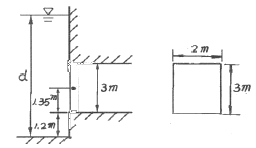
- 5.1m
- 5.7m
- 6.7m
- 7.7m
(정답률: 12%)
46. 다음 중 무차원량(無次元良)이 아닌 것은?
- 후르드수(Froude수)
- 에너지 보정계수
- 도점성 계수
- 비중
(정답률: 49%)
47. 그림과 같이 직경 1m에서 0.5m로 축소하는 관에서 직경 1m관속의 평균유속이 1m/sec라면, 0.5m 관 속이 평균유속은 얼마인가?
- 0.5m/sec
- 1.0m/sec
- 2.0m/sec
- 4.0m/sec
(정답률: 32%)
48. 내경 1.8m의 강관에 압력수두 100m의 물을 흐르게 하려면 강관의 필요 최소 두께는? (단, 강재의 허용인장응력은 1100kg/cm2이다.)
- 0.62cm
- 0.72cm
- 0.82cm
- 0.92cm
(정답률: 24%)
49. 그림은 정수위투수계에 의한 투수계수측정 모습이다. 여기서 h=100cm, ℓ=20cm, Q=6cm2/sec이고 시료의 단면적 A=300cm 일 때 투수 계수는?
- 0.004cm/sec
- 0.03cm/sec
- 0.2cm/sec
- 1.0cm/sec
(정답률: 23%)
50. 지하수의 흐름에서 Darcy법칙이 적용되는 일반저긴 레이놀즈 (Reynolds) 수(Re)의 범위는?
- Re＜4
- Re＜200
- Re＜400
- Re＜2000
(정답률: 18%)
51. 도수(hydraul ic jump) 전후의 수심 h1, h2의 관계를 도수전의 후루드수 Fr1의 함수로 표시한 것으로 옳은 것은?
(정답률: 47%)
52. 티센(Thiessen)의 면적 평균강우량(R) 산정식으로 옳은 것은? (단, Ai:i관측소의 면적, Ri:i관측소의 강우량)
(정답률: 36%)
53. 다음 설명 중 옳지 않은 것은?
- 유량빈도곡선의 경사가 급하면 홍수가 드물고 지하수의 하천방출이 크다.
- 수위-유량 관계곡선의 연장 방법인 Stevens 법은 Chezy의 유속공식을 이용한다.
- 자연하천에서 대부분 동일수위에 대한 수위 상승시와 하강시의 유량이 다르다.
- 합리식은 어떤 배수영역에 발생한 호우강도와 침투 유량간 관계를 나타낸다.
(정답률: 44%)
54. Manning의 조도계수 n=0.012인 원관을 써서 1m3/sec의 물을 동수경사 1/100로 송수하려 할 때 적당한 관이 지름은?
- d=70cm
- d=80cm
- d=90cm
- d=100cm
(정답률: 32%)
55. 동수경사선에 관한 설명으로 옳은 것은?
- 항상 에너지선 위에 있다.
- 항상 관로 위에 있다.
- 기준면으로부터 위치수두와 속도수두의 합이다.
- 항상 에너지선에서 속도수두만큼 아래에 있다.
(정답률: 35%)
56. 면적 10km2의 지역에 3시간에 1cm의 강우강도로 무한히 내릴 때 평형유출량(Qe)은 얼마인가?
- 9.72m2/sec
- 9.26m2/sec
- 8.94m2/sec
- 8.20m2/sec
(정답률: 37%)
57. 한계수심에 대한 설명으로 틀린 것은?
- 일정한 유량이 흐를 때 최소의 비에너지를 갖게 하는 수심
- 일정한 비에너지 아래서 최소유량을 흐르게 하는 수심
- 흐름의 속도가 장파의 전파속도와 같은 흐름의 수심
- 일정한 유량이 흐를 때 비력을 최소로 하는 수심
(정답률: 44%)
58. 다음 중 오리피스(Orifice)의 이론과 가장 관계가 먼 것은?
- 토리첼리(Torricelli)정리
- 베르누이(Bernoulli)정리
- 베나콘트랙타(Vena Contracta)
- 모세관현상의 원리
(정답률: 40%)
59. 다음 설명 중 옳지 않은 것은?
- 흐름이 층류일 때는 뉴톤의 점성 법칙을 적용할 수 있다.
- 정상류란 모든 점에서의 흐름과 특성이 시간에 따라 변하지 않는 흐름이다.
- 유관이란 개방된 곡선을 통과하는 유선으로 이루어진 평면을 말한다.
- 유선이란 각 점에서 속도벡터에 접하는 극선이다.
(정답률: 36%)
60. 폭이 무한히 넓은 개수로의 수리반경(Hydraulic radius 경심)은?
- 개수로이 폭과 같다.
- 개구로의 수심과 같다.
- 개수로의 면적과 같다.
- 계산할 수 없다.
(정답률: 32%)
4과목: 철근콘크리트 및 강구조
61. 그림과 같은 용접부에 작용하는 응력은?
- 112.7MPa
- 118.0MPa
- 120.3MPa
- 125.0MPa
(정답률: 46%)
62. 2방향 슬래브에서 사인장 균열이 집중하중 또는 집중반력 주위에서 펀칭전단(원뿔대 혹은 각뿔대 모양)이 일어나는 것으로 판단될 때의 위험단면은 어느 것인가?
- 집중하중이나 집중반력을 받는 면의 주변에서 c/4만큼 떨어진 주변단면
- 집중하중이나 집중반력을 받는 면의 주변에서 c/2만큼 떨어진 주변단면
- 집중하중이나 집중반력을 받는 면의 주변에서 d만큼 떨어진 주변단면
- 집중하중이나 집중반력을 받는 면의 주변단면
(정답률: 20%)
63. 그림과 같은 T형보에서 fck=21MPa, fy=300MPa일 때 설계휨강도 øMn를 구하면? (단, 과소 철근보이고, As=5000mm2)
- 613.13kNㆍm
- 631.38kNㆍm
- 690.55kNㆍm
- 707.94kNㆍm
(정답률: 44%)
64. 콘크리트 구조설계기준의 요건에 다르면 fck=38MPa 일 때 직사각형 응력분포의 깊이를 나타내는 β1의 값은 얼마인가?
- 0.78
- 0.92
- 0.80
- 0.75
(정답률: 52%)
65. 프리텐션 방식으로 제작한 부재에서 프리스트레스에 의한 콘크리트의 압축 응력이 7MPa이고 n=6일 때 콘크리트의 탄성 변형에 의한 PS강재의 프리스트레스의 감소량은 얼마인가?
- 24MPa
- 42MPa
- 48MPa
- 52MPa
(정답률: 48%)
66. fck=28MPa, fy=350MPa을 사용하고 bω=500mm, d=1000mm인 휨을 받는 직사각형 단면에 요구되는 최소 휭철근량을 얼마인가?
- 1524mm2
- 1745mm2
- 1890mm2
- 2000mm2
(정답률: 48%)
67. 처짐과 균열에 대한 다음 설명 중 틀린 것은?
- 크리프, 건조수축 등으로 인하여 시간의 경과와 더불어 진행되는 처짐이 탄성처짐이다.
- 처짐에 영향을 미치는 인자로는 하중, 온도, 습도, 배령, 함수량, 압축철근의 단면적 등이다.
- 균열폭을 최소화 하기 위해서는 적은 수의 굵은 철근 보다는 많은 수의 가는 철근을 인장측에 잘 분포시켜야 한다.
- 콘크리트 표면의 균열폭은 피부두께의 영향을 받는다.
(정답률: 41%)
68. 철근콘크리트 보에서 강도 설계법의 기본 가정에 관한 설명 중 옳지 않은 것은?
- 콘크리트와 철근이 모두 후크(Hook)의 법칙을 따른다.
- 콘크리트의 최대 압축변형률은 0.003으로 한다.
- 휨응력 계산에서 콘크리트의 인장강도는 무시한다.
- 변형률은 중립축으로부터 떨어진 거리에 비례한다.
(정답률: 20%)
69. 다음 중 PSH구조물의 해석개념과 직접적인 관련이 없는 것은?
- 균등질 보의 개념(homogeneous beam concept)
- 공액보의 개념(conjugate beam concept)
- 내력모멘트의 개념(internal force concept)
- 하중평형의 개념(load balavcing concept)
(정답률: 43%)
70. 자중을 포함한 계수하중 80kN/m를 지지하는 그림과 같은 단순보가 있다. 경간은 7m이고 fck=21MPa, fy=300MPa일 때 다음 설명 중 옳지 않은 것은?
- 위험 단면에서의 계수전단력은 24kN이다.
- 콘크리트가 부담 할 수 있는 전단강도는 114.6kN이다.
- 전단철근(수직스터럽)의 최대간격은 250mm이다.
- 이론적으로 전단 철근이 필요한 구간은 지점으로 부터 1.73m 까지 구간이다.
(정답률: 27%)
71. 복철근 콘크리트 단면에 압축철근비 p′=0.01이 배급된 경우 순간처짐이 20mm 일 때 1년이 지난 후 처짐량은? (단, 작용하는 모든 하중은 지속하중으로 보며 지속하중이 1년 재하기가에 따르는 계수 ξ는 1.4이다.)
- 42.2mm
- 40.0mm
- 38.7mm
- 39.9mm
(정답률: 40%)
72. 직사각형 기둥(300mm×450mm)인 띠철근 단주의 공칭축강도(Pn)는 얼마인가? (단, fck=28MPa, fy=400MPa, Acr=3854mm2)
- 2611.2kN
- 3263.2kN
- 3730.3kN
- 3963.4kN
(정답률: 34%)
73. 경간8m인 단순 PC보에 등분포하중(고정하중과 휨하중의 합)W=30kN/m가 작용하며 PS강재는 단면 중심에 배치되어 있다. 인장측 하연의 콘크리트 응력이 0이 되면 PS강자에 작용되어야 할 인장력 P는?
- 2400kN
- 3500kN
- 4000kN
- 4920kN
(정답률: 31%)
74. 현행 콘크리트구조설계기준(2003)에 의거 비틀림에 대한 규정으로 틀린 것은? (단, 여기에서 Tu는 계수비틀림모멘트이고, Tn은 공칭비틀림강도, Tc는 콘크리트에 의한 공칭비틀림강도이다.)
- Tu≤øTn 여기에서 Tn을 계산할 때 모든 비틀림모멘트가 스터럽과 주철근에 의해 저항되는 것으로 보고 Tc=Q으로 가정한다.
- 비틀림모멘트에 의해 요구되는 철근을 비틀림모멘트와 조합하여 작용하는 전단력과 휭모멘트 및 축력에 대해서 요구되는 철근에 추가하여야 한다.
- 전단과 비틀림이 동시에 작용할 때 비틀림은 콘크리트의 공칭전단강도Vc에 영향을 미친다고 한다.
- 비틀린 응력은 보가 속이 비고 두께가 얇은 박 벽관(thin-walled tube)으로 가정하여 구한다.
(정답률: 16%)
75. 주어진 T형 단면에서 전단에 대한 위험 단면에서 Vud/Mu=0.28이 었다. 휨철근 인장강도의% 이상의 유효 프리스트레스트 힘이 작용할 때 콘크리트의 공칭전단강도(Vc)는 얼마인가? (단, fck=45MPa, Vu:계수전단력 Mu:계수휨모멘트 d:압축측 표면에서 긴장재 도심까지의 거리이다.)
- 185.7kN
- 230.5kN
- 347.8kN
- 462.7kN
(정답률: 30%)
76. 철근콘크리트 부재의 철근 이음에 관한 설명 중 옳지 않은 것은?
- D35를 초과하는 철근은 겹칠이음을 하지 않아야 한다.
- 인장 이형철근의 겹침이음에서 A급 이음은 1.3Id이상, B급 이음은 1.0Id이상 겹쳐야 한다. (단, Id는 규정에 의해 계산된 인장 이형철근으 정착길이 이다.)
- 압축이형철근의 이음에서 콘크리트의 설계기준압축 강도가 21MPa 미만인 경우에는 겹침이음길이를 1/3증가 시켜야 한다.
- 용접이음과 기계적 연결은 철근의 항복강도의 125%이상을 발휘할 수 있어야 한다.
(정답률: 37%)
77. 다음은 옹벽의 안정에 대한 규정이다. 옳지 않은 것은?
- 옹벽의 활동에 대한 저항력은 옹벽에 작용하는 수평력의 1.5배 이상이어야 한다.
- 전도 및 지반지지력에 대한 안정조건을 만족하며 활동에 대한 안정조건만을 만족하지 못할 경우 활동방지벽을 설치하여 활동저항력을 증대시킬 수 있다.
- 전도에 대한 저항모멘트는 횡토압에 의한 전도 모멘트의 1.5배 이상이어야 한다.
- 지지 지반에 작용되는 최대 압력이 지반의 허용지지력을 초과하지 않아야 한다.
(정답률: 39%)
78. 철근콘크리트 구조물을 설계할 때는 하중계수와 하중 조합등을 충분히 고려하여 구조물에 작용하는 최대 소요강도(U)에 만족하도록 안전하게 설계해야 한다. 그 이유로 적합하지 않은 것은?
- 예상하지 못한 초과하중에 대비하기 위해
- 구조물 설계 시에 사용하는 가정과 실제와의 차이에 대비하려고
- 재료의 강도나 시공시의 오차 등에 따른 위험에 대비 하려고
- 고정이나 활화중과 같은 주요하중의 변화에 대비하기 위해
(정답률: 28%)
79. 폭 B=300mm, 유효길이 d=500mm, 철근단면적 As=1500mm2을 갖는 단철근 콘크리트 직사각형 보를 강도설계법으로 휨설계할 때, 설계 휨모멘트 강도(øMn)는 얼마인가? (단, 콘크리트 설계기준강도 fck=28MPa, 철근항복 강도fy=400MPa)
- 318.2kNㆍm
- 275.6kNㆍm
- 233.6kNㆍm
- 195.7kNㆍm
(정답률: 41%)
80. 다음 그림과 같이 직경 22mm의 구멍이 있는 판(plate)에서 인장 응력 겈토를 위한 순폭은 얼마인가?
- 136mm
- 130mm
- 114mm
- 108mm
(정답률: 25%)
5과목: 토질 및 기초
81. 항타 공식에 의한 말뚝의 허용지지력을 구하고자 한다. 이 때 말뚝행머의 무게가 2.5ton, 햄머의 낙하40cm 타격당 말뚝의 평균 관입량이 1.5cm였고 안전율 Fs=6으로 보았다. Engineer ing News 공식에 의한 허용 지지력은? (단, 단동식 증기햄머를 사용한다.)
- 3.6ton
- 4.2ton
- 9.5ton
- 16.7ton
(정답률: 44%)
82. 포화도니 실트질 모래지반에 표준관입 시험결과 표준관입저항치 N=21 이었다. 수정 표준관입 저항치는?
- 20
- 19
- 18
- 17
(정답률: 35%)
83. 동일분류법에 의해 분류한 흙의 분류기호 중 도로노반재료로서 가장 좋은 흙은?
- CL
- ML
- SP
- GW
(정답률: 48%)
84. 다음은 샌드콘을 사용하여 현장 흙의 밀도를 측정하기 위한 시험결과이다. 다음 결과로부터 현장의 건조단위 중량을 구하면?
- 1.617t/m3
- 1.716t/m3
- 1.817t/m3
- 1.917t/m3
(정답률: 32%)
85. γt=1.9t/m3, ø=30°인 뒤채움 모래를 이용하여 8m 높이의 보강토 옹벽을 설치하고자 한다. 폭 75mm, 두께 3.69mm의 보강띠를 연직방향 설치간격 SV=0.5m, 수평방향 설치간격 Sh=1.0m로 시공하고자 할 때, 보강띠에 작용하는 최대힘 Tmax의 크기를 계산하면?
- 1.53ton
- 2.53ton
- 3.53ton
- 4.53ton
(정답률: 22%)
86. 흙의 다짐에서 다짐에너지를 변화시킬 경우에 대한 설명으로 틀린 것은?
- 다짐에너지를 증가시키면 최대건조 단위중량은 증가한다.
- 다짐에너지를 매우 크게 해도 다짐곡선은 영공기간극 곡선 아래에 그려진다.
- 다짐에너지를 증가시키면 최적함수비는 감소한다.
- 최대건조 단위중량을 나타내는 점들을 연결하면 영공기간극 곡선이 얻어진다.
(정답률: 31%)
87. Terzaghi의 압밀 이론에서 2차 압밀이란 어느 것인가?
- 과대하중에 의해 생기는 압밀
- 과잉간극수압이 “0”이 되기 전의 압밀
- 횡방향의 변형으로 인한 압밀
- 과잉간극수압이 “0”이 된 후에도 계속되는 압밀
(정답률: 53%)
88. 간극률 n=40%, 비중 Gs=2.65인 언 사질토층의 한계동수경수 icr은 얼마인가?
- 0.99
- 1.06
- 1.34
- 1.62
(정답률: 48%)
89. 말뚝에 대한나 동역학적 지지력공식 중 말뚝머리에서 측정되는 리바운드량을 공식에 이용하는 것은?
- Hilley 공식
- Engineering News공식
- Sander 공식
- Weisbach 공식
(정답률: 22%)
90. Rod에 붙인 어떤 저항체를 지중에 넣어 관입, 인발 및 회전에 의해 흙의 전단강도를 측정하는 원위치 시험은?
- 보링(boring)
- 사운딩(sounding)
- 시료채취(sampling)
- 비파괴 시험(NDT)
(정답률: 76%)
91. 아래 그림에 보인 댐에서 A점에 대한 간극수압은?
- 3t/m2
- 4t/m2
- 5t/m2
- 6t/m2
(정답률: 23%)
92. 다음 그림과 같은 정방향 기초에서 안전율을 3으로 할 때 Terzaghi 공식을 사용하여 지지력을 구하고자 한다. 이 때 한 변의 최소길이는? (단, 흙의 전단강도 c=6t/m2, ø=0°이고, 흙의 습윤 및 포화단위 중량은 각각 1.9t/m2, 2.0t/m2, Nc=5.7, Nq=1.0, Nγ=0이다.)
- 1.115m
- 1.432m
- 1.512m
- 1.624m
(정답률: 30%)
93. 그림과 같이 지표면에 P1=100ton의 집중하중이 작용할 때 지중A점의 집중하중에 의한 수작응력은 얼마인가?
- σZ=0.10t/m2
- σZ=0.20t/m2
- σZ=0.80t/m2
- σZ=2.00t/m2
(정답률: 34%)
94. γsat=2.0t/m2인 사질토가 20°로 경사진 무한사면이 있다. 지하수위가 지표면과 일치하는 경우 이사면의 안전율이 1이상이 도기 위해서는 흙의 내부마찰각이 최소 몇 도 이상이어야 하는가?
- 18.21°
- 20.52°
- 36.06°
- 45.47°
(정답률: 38%)
95. 다음 흙의강도에 대한 설명으로 틀린 것은?
- 점성토에서는 내부 마찰각이 작고 사질토에서는 점착력이 작다.
- 일축압축 시험은 주로 점성토에 많이 사용한다.
- 이론상 모래의 내부마찰각은 0이다.
- 흙의 전단응력은 내부마찰각과 점착력의 두 성분으로 이루어 진다.
(정답률: 40%)
96. 다음 설명 중 틀린 것은?
- 점토의 경우 입고 분포는 상대적으로 공학적 거동에 큰 영향을 미치지 않고 물의 유무가 거동에 매우 큰 영향을 준다.
- 액상지수는 자연상태에 있는 점토 지반의 상대적인 연경도를 나타내는데 사용되며 1에 가까운 지반일수록 과압밀 된 상태에 있다.
- 활성도가 크다는 것은 점토광물이 조금만 증가하더라도 소성이 매우 크게 증가한다는 것을 의미하므로 지반의 팽창 잠재 능력이 크다.
- 흐트러지지 않은 자연상태의 지반인 경우 수축한계가 종종 소성한계보다 큰 지반이 존재하며 이는 특히 민감한 흙의 경우 나타나는 현상으로 주로 흙의 구조 때문이다.
(정답률: 23%)
97. 동일한 등분포 하중이 작용하는 그림과 같은(A)와 (B)두개의 구형기초판에서 A와B점의 수직 Z되는 깊이에서 증가되는 지중응력을 각각 σA, σB라 할 때 다음 중 옳은 것은? (단, 지반 흙의 성질은 동일함)
- σA=2σB
- σA=4σB
(정답률: 53%)
98. 흙의 동상에 영향을 미치는 요소가 아닌 것은?
- 모관 상승고
- 흙의 투수계수
- 흙의 전단강도
- 동결온도의 계속시간
(정답률: 59%)
99. 어떤 흙의 전단실험결과 C=1.8kg/cm2, ø=35°, 토립자에 작용하는 수직응력 σ=3.6kg/cm2일 때 전단 강도는?
- 4.89kg/cm2
- 4.32kg/cm2
- 6.33kg/cm2
- 3.86kg/cm2
(정답률: 53%)
100. 흙시료 채취에 관한 설명 중 옳지 않은 것은?
- Post Hole형의 Auger는 비교적 연약한 흙을 Boring 하는데 적합하다.
- 비교적 단단한 흙에는 Screw 형의 Auger가 적합하다.
- Auger Boring은 흐트러지지 않는 시료를 채취하는데 적합하다.
- 깊은 토층에서 시료를 채취할 때는 보통 기계 Boring을 한다.
(정답률: 50%)
6과목: 상하수도공학
101. 상수도 송수시설의 용량산정을 위한 계획송수량의 원칙적 기준이 되는 수량은?
- 계획 1일 최대 급수량
- 계획 1일 평균 급수량
- 계획 1인 1일 최대 급수량
- 계획 1인 1일 평균 급수량
(정답률: 39%)
102. 원수의 알카리도가 50ppm, 탁도가 500ppm일 때 황산알루미늄의 소비량은 60ppm이다. 이러한 원수가 48000m3/day로 흐를 때 5%용액의 황산알루미늄이 1일 필요량은? (단, 액체의 비중을 1으로 가정)
- 40.6m3/day
- 47.6m3/day
- 50.6m3/day
- 57.6m3/day
(정답률: 20%)
103. 다음 중 처리장에 대한 기본 계획시 고려사항으로 잘못 된 것은? (단, 처리장의 시설은 처리시설과 처리장내 연결관거로 구분한다.)
- 처리장 위치는 주변의 환경조건을 고려하여 정한다.
- 분류식의 처리시설은 우천시 계획오수량을 기준으로 하여 계획한다.
- 처리장의 부지면적은 장래확장 및 고도처리계획 등을 고려하여 계획한다.
- 처리장은 건설비 및 유지관리비 등의 경제성, 유지관리의 난이도 및 확실성 등을 고려하여 정한다.
(정답률: 42%)
104. 유연면적 5km2, 인구밀도 300인/ha. 1인 1일 최대오수량 250L/인ㆍ일 일 때 이도시의 계획 1일 평균오수량은 얼마 정도인가? (단, 지하수량을 포함한 기타배수량은 고려하지 않는다.)
- 약 15000m3/day
- 약 30000m3/day
- 약 45000m3/day
- 약 60000m3/day
(정답률: 29%)
1⑤. 다음은 급수용 저수지의 필요수량을 결정하기 위한 유량누가곡선도이다. 틀린 설명은?
- 필요(유효)저수량
 이다.
이다. - 저수시작점은 C이다.
 구간에서는 저수지의 수위가 상승한다.
구간에서는 저수지의 수위가 상승한다.- 이론적 산출방법으로 Ripple's method라 한다.
(정답률: 43%)
106. 혐기성 소화조 운전시 소화가스 발생량 저하의 원인과 가장 거리가 먼 것은?
- 소화 슬러지의 과잉배출
- 소화가스의 누출
- 조내 온도 상승
- 과다한 산생성
(정답률: 29%)
107. 하수도 계획의 목표년도 원칙적으로 몇 년 정도 인가?
- 10년
- 20년
- 30년
- 40년
(정답률: 49%)
108. 급수방식에 대한 다음 설명 중 맞지 않은 것은?
- 급수방식은 직결식과 저수도식으로 나누며 이를 병용하기도 한다.
- 배수관의 관경과 수압이 충분할 경우는 직결식을 사용한다.
- 재해시나 사고 등에 의한 수도의 단수나 강수시에도 물을 반드시 확보해야 할 경우는 직결식으로 한다.
- 배수관의 압력변동에 관계없이 상시 일정한 수량과 압력을 필요로 하는 경우는 저수조식으로 한다.
(정답률: 48%)
109. 정수시설인 급속여과지의 여과속도는 어느 정도를 표준으로 하는가?
- 75~90m/day
- 90~100m/day
- 120~150m/day
- 180m/day내외
(정답률: 45%)
110. 다음은 우수조정지에 대한 설명으로 잘못된 것은?
- 하류관거의 유하능력이 부족한 곳에 설치한다.
- 하류지역의 펌프장 능력이 부족한 곳에 설치한다.
- 우수의 방류방식은 펌프가압식을 원칙으로 한다.
- 구조형식은 댐식, 굴착식 및 지하식으로 한다.
(정답률: 40%)
111. 송수펌프의 전양정을 H, 관로손실수두의 합을 Σhf, 실양정을 ha, 관로밀단의 잔류속도수두를 ho라 할 때 관계식으로 옳은 것은?
- H=ha+Σhf+ho
- H=ha-Σhf-ho
- H=ha-Σhf+ho
- H=ha+Σhf-ho
(정답률: 35%)
112. 수원에서 가장까지의 급수계통을 나타낸 것 중 바르게 나열한 것은?
- 취수 및 집수시설-도수시설-정수시설-송수시설-배수시설-급수시설
- 취수 및 집수시설-도수시설-배수시설-송수시설-정수시설-급수시설
- 취수 및 집수시설-송수시설-정수시설-도수시설-배수시설-급수시설
- 취수 및 집수시설-송수시설-도수시설-배수시설-정수시설-급수시설
(정답률: 43%)
113. 직경이 800mm인 하수관을 매설하려고 한다. 매설토와 단위 중량이 18kN/m3이고 흙의 종류, 흙두께, 굴착폭 등에 따라 결정되는 계수 C1=1.35이며 관의 상부 90°부분에서의 관매설을 위하여 굴토한 도랑의 폭이 1.5m일 때 매설관이 받는 하중을 마스톤(Marston)공식을 이용하여 구하면 얼마인가?
- 27.4kN/m
- 34.3kN/m
- 54.7kN/m
- 71.5kN/m
(정답률: 18%)
114. 도수시설 중 접합정에 대한 설명으로 맞지 않는 것은?
- 원형 또는 각형의 콘크리트 혹은 철근콘크리트로 축조 한다.
- 수압이 높은 경우에는 필요에 따라 수압제어용 밸브를 설치한다.
- 유출관의 유출구 중심 높이는 저수위에서 관경의 3배이상 낮게 하는 것을 원칙으로 한다.
- 유입속도가 큰 경우에는 접합정 내에 월류벽 등을 설치하여 유속을 감쇄시킨다.
(정답률: 32%)
115. 함수율95%인 슬러지를 농축시켰더니 최초 부피의 1/2이 되었다. 농축된 슬러지의 함수율(%)은? (단, 농축 전후의 슬러지 비중은 1로 가정한다.)
- 75
- 80
- 85
- 90
(정답률: 31%)
116. 다음 그림은 펌프 표준득성 곡선이다. 펌프의 양정을 나타내는 곡선 형태는?
- A
- B
- C
- D
(정답률: 55%)
117. 원심력 펌프의 규정회전수 N=8회/sec, 펌프의 규정토출량 Q=47m3/min, 펌프의 규정양정 H=13m일 때, 이 펌프의 비회전도(Ns)는 약 얼마인가?
- 37
- 147
- 239
- 481
(정답률: 43%)
118. 하수 둥의 질소와 인을 동시 제거하기 위해 이용될 수 있는 고도처리시스템은?
- 협기호호기조합법
- 3단 활성슬러지법
- Phostrip 법
- 혐기무산소호기조합법
(정답률: 48%)
119. 정수장에서 전염소처리법(prechloriantion)의 목적으로 가장 거리가 먼 것은?
- 맛과 냄새의 제거
- 암모니아성질수와 유기물 등의 처리
- 철과 망간의 제거
- 적정한 잔류염소량 유지
(정답률: 31%)
120. 하수처리 설비에서 슬러지 수송관 설계시 고려되어야 할 사항 중 틀린 것은?
- 관은 스테인리스, 주철관 등 견고하고 내식성 및 내구성 있는 것을 사용한다.
- 배관은 동수경사선 이상으로 한다.
- 배관은 가능하면 직선이 되도록 해야 한다.
- 필요한 곳에서는 제수밸브, 이토밸브, 공기밸브 등의 안전 설비를 설치한다.
(정답률: 50%)
휨모멘트는 M, 보의 길이는 L, 보의 단면적은 A, 보의 탄성계수는 E, 보의 단면의 중립축에서 가장 먼 거리는 y이다.
따라서 보의 탄성에너지는 다음과 같이 나타낼 수 있다.
U = (1/2) * (M * L)^2 / (E * A * y^2)
위 식에서 ""가 정답인 이유는 y가 가장 큰 값이기 때문이다. y가 크면 분모가 작아져서 탄성에너지가 커지기 때문이다.